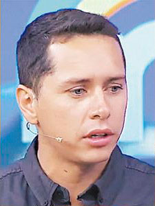

La televisión chilena ha enfrentado en los últimos 50 días
algunos de los momentos más turbulentos en décadas, con cambios de
líneas editoriales, despidos de rostros e impacto diverso en sus
figuras. La crisis trazó un antes y un después en la pantalla local.
Por: Dusanka Obilinovic y Patricia Reyes
Puede sonar algo exagerado, pero es un escenario real: la crisis cambió
de manera profunda a la televisión chilena. Encender hoy la pantalla
chica no es lo mismo que hacerlo antes del 18 de octubre: hay figuras
que ya no están, hay líneas editoriales modificadas, hay rostros que han
salido dañados al enfrentar los capítulos más difíciles de sus carreras.
Ante la nueva coyuntura del país, el medio de comunicación más masivo
debió adaptarse con una serie de variaciones que ya configuran una
suerte de nueva TV a partir del estallido.
Los matinales:
Los más damnificados
Con un promedio de cinco horas diarias, y alzados como los espacios
más relevantes de cada canal -donde están sus rostros más rutilantes
y donde las estaciones establecen parte de su línea editorial-, los
programas de la mañana han debido trastocar casi todo su esquema
como consecuencia de la crisis. Dejaron de hablar de farándula y de
las vidas personales de los panelistas; borraron sus bloques de
cocina; empezaron a invitar políticos y representantes del mundo
social; y en sus móviles desde la calle se enfrentaron en vivo y en
directo a ciudadanos que no tuvieron reparos en criticarlos
duramente.
Por lo mismo, canales como Mega decidieron sacar de su matinal
(Mucho gusto) a panelistas que generaban animadversión, como
Patricia Maldonado y Karol Lucero. Otros, como Mauricio Jürgensen
(Bienvenidos) y Daniel Stingo (Buenos días a todos), también
salieron, debido a cierto perfil más confrontacional que no encajaba
con los nuevos tiempos. Mientras que Raquel Argandoña (Bienvenidos)
cambió su característico estilo frívolo para mostrarse más cercana a
las demandas ciudadanas.
José Antonio Neme, panelista de Mucho gusto, da su opinión sobre
este período: "Intentamos ser un foro de conversación respetuosa,
sensata, dialogante, con mucho sentido común, mucho sentido crítico,
tratando de escuchar todas las voces. Hoy los medios, y sobre todo
los formatos matinales donde hay un tren programático de varias
horas, tiene esa responsabilidad, la de abrir el espacio a la
conversación".
Julia Vial conduce Hola Chile (La Red) y asegura que "hay que partir
de la base de ser empáticos con las demandas de la ciudadanía.
Tenemos que debatir y conversar con altura de miras, y buscando
siempre puntos en común, porque nos interesa ser un canal de
diálogo".
Los rostros que se llevó la crisis
► Daniel Stingo (TVN).

► Karol Lucero (Mega).
► Camila Recabarren (CHV).
Salarios millonarios
A los pocos días del inicio del estallido social, la animadora de
TVN y del Festival de Viña, María Luisa Godoy, se acercó a hablar
con sus jefes para manifestar sus deseos de recibir menos sueldo, y
así beneficiar a sus compañeros que ganan menos de $600 mil. La
conductora explica su decisión: "Hace tiempo que dije en distintos
programas que encontraba que en TV estaba mal pelado el chancho. Y
el estallido social ayudó a generar más consciencia de estos temas.
Por lo que siento que llegó el momento de pasar de las palabras a la
acción y los que tenemos más oportunidades tenemos que hacer un
esfuerzo mayor. Pero es una decisión personal que cada uno sabrá
cómo aborda".
En Chilevisión, CNN Chile y Canal del Fútbol, todos del Grupo
Turner, también anunciaron novedades en ese ítem: decidieron bajar
los salarios de sus rostros y ejecutivos para nivelar el pago de sus
trabajadores. De esa manera, los empleados pasarán a recibir un piso
de sueldo líquido de $550 mil a uno de $800 mil desde el próximo
año.
► Marcela Vacarezza (TVN).
► Mauricio Jürgensen (Canal 13).
Impacto en los "rostros"
Mientras la TV hizo frente al nuevo escenario, sus "rostros" se
vieron igual de afectados. Para el animador de Canal 13, Sergio
Lagos, este fenómeno ha sido "un potente shock de realidad", que ha
obligado a cada comunicador a repensar su rol. "Hemos todos tenido
que intentar aprender más, abrir más la cabeza, conectarnos con las
emociones, con los datos duros, con espacios de reflexión que antes
no elaborábamos".
En esa misma línea, pero desde las áreas de prensa, Neme reflexiona:
"Estamos mandatados a hacer un mejor periodismo, a ser más
rigurosos, más cautelosos con los datos, a entender y a empatizar".
"En lo personal, yo no venía haciendo nada distinto a lo que hoy se
está exigiendo en la calle", dice por su parte Francisco Saavedra,
apuntando a los programas que encabeza en Canal 13, Lugares que
hablan y Contra viento y marea.
Para el publicista y académico de la Universidad Diego Portales,
Cristian Leporati, "los rostros eran personajes de alguna forma
anoréxicos intelectualmente, sin postura, totalmente prístinos,
limpios, sin compromiso, y simplemente operaban en términos de
superficialidad, y tomaban temáticas superficiales para evitar el
compromiso". Por ello, continúa, "el movimiento social los obliga a
cambiar esa retórica, a cambiar esa actitud, y de alguna forma
también empiezan a tomar un propósito, porque la ciudadanía les está
exigiendo que tengan una postura frente a las cosas. Porque hoy es
esto pero después será otra cosa, y uno espera que un rostro, que es
un líder de opinión, ayude".
► Ignacio Gutiérrez (TVN).
► Patricia Maldonado (Mega).
► Claudia Schmidt (La Red).
Más rating, menos publicidad
La televisión ha sido el principal medio por el que la gente se ha
informado en estos 50 días. El encendido de televisores aumentó tras
el 18 de octubre: si en 2018 el visionado diario fue de 2 horas
promedio, la cifra superó las cinco horas los primeros días tras el
estallido social. El peak de encendido en esos días se registró el
20 de octubre, con un promedio diario de 5 horas y 22 minutos.
También la crisis ha arrojado algunas de las sintonías más
voluminosas del último tiempo: el martes 12 de noviembre, a las
22.30 horas, el discurso del Presidente Sebastián Piñera registró
una sintonía histórica de 66,8 puntos. Eso sí, la inversión
publicitaria en la TV cayó durante octubre, afectando las finanzas
de la industria e incluso varios proyectos para 2020: según la
Asociación Chilena de Agencia de Medios, hubo una caída de un 40%
comparada con igual período en 2018.
Los matinales:
Los más damnificados
Con un promedio de cinco horas diarias, y alzados como los espacios
más relevantes de cada canal -donde están sus rostros más rutilantes
y donde las estaciones establecen parte de su línea editorial-, los
programas de la mañana han debido trastocar casi todo su esquema
como consecuencia de la crisis. Dejaron de hablar de farándula y de
las vidas personales de los panelistas; borraron sus bloques de
cocina; empezaron a invitar políticos y representantes del mundo
social; y en sus móviles desde la calle se enfrentaron en vivo y en
directo a ciudadanos que no tuvieron reparos en criticarlos
duramente.
Por lo mismo, canales como Mega decidieron sacar de su matinal
(Mucho gusto) a panelistas que generaban animadversión, como
Patricia Maldonado y Karol Lucero. Otros, como Mauricio Jürgensen
(Bienvenidos) y Daniel Stingo (Buenos días a todos), también
salieron, debido a cierto perfil más confrontacional que no encajaba
con los nuevos tiempos. Mientras que Raquel Argandoña (Bienvenidos)
cambió su característico estilo frívolo para mostrarse más cercana a
las demandas ciudadanas.
José Antonio Neme, panelista de Mucho gusto, da su opinión sobre
este período: "Intentamos ser un foro de conversación respetuosa,
sensata, dialogante, con mucho sentido común, mucho sentido crítico,
tratando de escuchar todas las voces. Hoy los medios, y sobre todo
los formatos matinales donde hay un tren programático de varias
horas, tiene esa responsabilidad, la de abrir el espacio a la
conversación".
Julia Vial conduce Hola Chile (La Red) y asegura que "hay que partir
de la base de ser empáticos con las demandas de la ciudadanía.
Tenemos que debatir y conversar con altura de miras, y buscando
siempre puntos en común, porque nos interesa ser un canal de
diálogo".
Salarios millonarios
A los pocos días del inicio del estallido social, la animadora de
TVN y del Festival de Viña, María Luisa Godoy, se acercó a hablar
con sus jefes para manifestar sus deseos de recibir menos sueldo, y
así beneficiar a sus compañeros que ganan menos de $600 mil. La
conductora explica su decisión: "Hace tiempo que dije en distintos
programas que encontraba que en TV estaba mal pelado el chancho. Y
el estallido social ayudó a generar más consciencia de estos temas.
Por lo que siento que llegó el momento de pasar de las palabras a la
acción y los que tenemos más oportunidades tenemos que hacer un
esfuerzo mayor. Pero es una decisión personal que cada uno sabrá
cómo aborda".
► Cristián Sánchez y María Luisa Godoy, de
Buenos días a todos (TVN).
En Chilevisión, CNN Chile y Canal del Fútbol, todos del Grupo
Turner, también anunciaron novedades en ese ítem: decidieron bajar
los salarios de sus rostros y ejecutivos para nivelar el pago de sus
trabajadores. De esa manera, los empleados pasarán a recibir un piso
de sueldo líquido de $550 mil a uno de $800 mil desde el próximo
año.
Impacto en los "rostros"
Mientras la TV hizo frente al nuevo escenario, sus "rostros" se
vieron igual de afectados. Para el animador de Canal 13, Sergio
Lagos, este fenómeno ha sido "un potente shock de realidad", que ha
obligado a cada comunicador a repensar su rol. "Hemos todos tenido
que intentar aprender más, abrir más la cabeza, conectarnos con las
emociones, con los datos duros, con espacios de reflexión que antes
no elaborábamos".
En esa misma línea, pero desde las áreas de prensa, Neme reflexiona:
"Estamos mandatados a hacer un mejor periodismo, a ser más
rigurosos, más cautelosos con los datos, a entender y a empatizar".
"En lo personal, yo no venía haciendo nada distinto a lo que hoy se
está exigiendo en la calle", dice por su parte Francisco Saavedra,
apuntando a los programas que encabeza en Canal 13, Lugares que
hablan y Contra viento y marea.
Para el publicista y académico de la Universidad Diego Portales,
Cristian Leporati, "los rostros eran personajes de alguna forma
anoréxicos intelectualmente, sin postura, totalmente prístinos,
limpios, sin compromiso, y simplemente operaban en términos de
superficialidad, y tomaban temáticas superficiales para evitar el
compromiso". Por ello, continúa, "el movimiento social los obliga a
cambiar esa retórica, a cambiar esa actitud, y de alguna forma
también empiezan a tomar un propósito, porque la ciudadanía les está
exigiendo que tengan una postura frente a las cosas. Porque hoy es
esto pero después será otra cosa, y uno espera que un rostro, que es
un líder de opinión, ayude".
La televisión ha sido el principal medio por el que la gente se ha
informado en estos 50 días. El encendido de televisores aumentó tras el
18 de octubre: si en 2018 el visionado diario fue de 2 horas promedio,
la cifra superó las cinco horas los primeros días tras el estallido
social. El peak de encendido en esos días se registró el 20 de octubre,
con un promedio diario de 5 horas y 22 minutos.
También la crisis ha arrojado algunas de las sintonías más voluminosas
del último tiempo: el martes 12 de noviembre, a las 22.30 horas, el
discurso del Presidente Sebastián Piñera registró una sintonía histórica
de 66,8 puntos. Eso sí, la inversión publicitaria en la TV cayó durante
octubre, afectando las finanzas de la industria e incluso varios
proyectos para 2020: según la Asociación Chilena de Agencia de Medios,
hubo una caída de un 40% comparada con igual período en 2018.
► El panel de Bienvenidos (Canal 13), en una de sus
jornadas más agitadas, con Hermógenes Pérez de Arce.